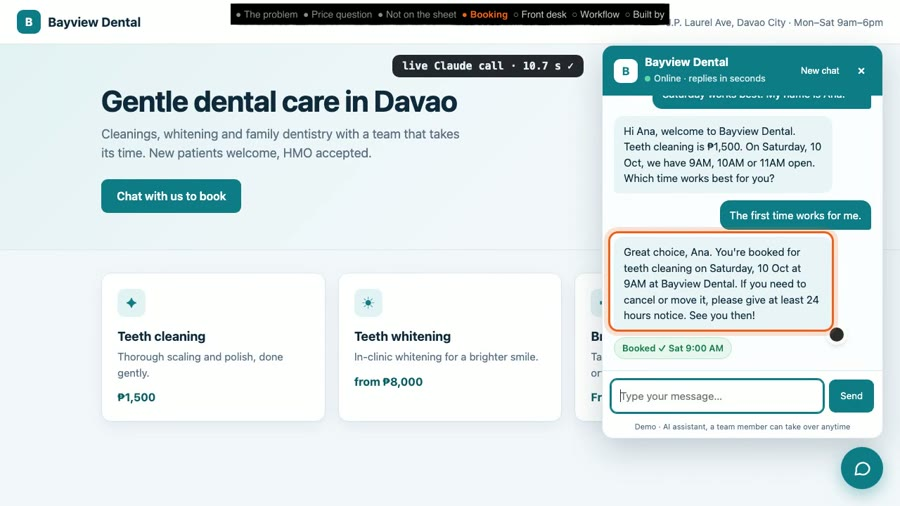
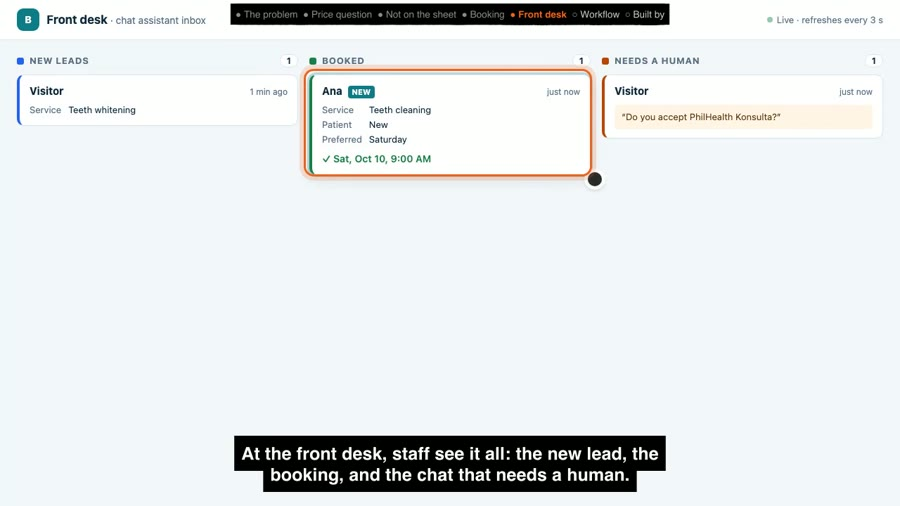
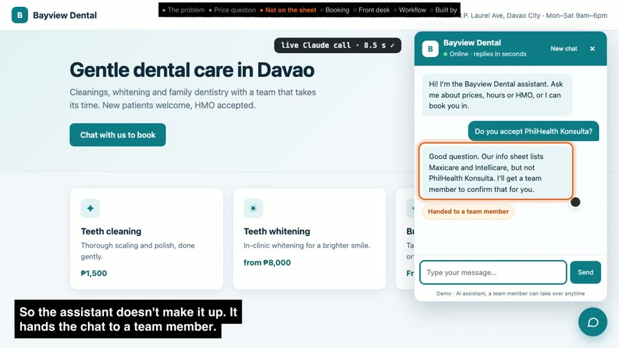

Clinic chat assistant: answers patients and books them in, even when the front desk is busy
Patients ask a clinic the same things all day: prices, hours, "do you take my HMO?". This chat on the clinic's website answers them, books an open time, and passes anything it isn't sure about to a staff member. Your team sees every chat on one simple board.
The real booking conversation, word for word
A real chat from the recorded test. The assistant wrote both replies on the spot; nothing is pre-written.
- VisitorHi, I'd like a cleaning. I'm a new patient, Saturday works best. My name is Ana.
- Assistant · 10.5 sHi Ana, welcome to Bayview Dental. Teeth cleaning is ₱1,500. On Saturday, 10 Oct, we have 9AM, 10AM or 11AM open. Which time works best for you?
- VisitorThe first time works for me.
- Assistant · 10.6 s · booked Sat 10 Oct, 9:00 AMGreat choice, Ana. You're booked for teeth cleaning on Saturday, 10 Oct at 9AM at Bayview Dental. If you need to cancel or move it, please give at least 24 hours notice. See you then!
It noted her name, that she is a new patient, the service and the day, and took 9:00 AM off the open list so nobody else can book it.


The problem: the same questions all day, and nobody there after hours
Clinic staff answer prices, hours and "do you take my HMO?" all day. After hours nobody answers, so nobody books.
Results (measured in the recorded run)
- Price question: "How much is teeth whitening?" answered in 6.8 s: "Teeth whitening starts from ₱8,000. The dentist confirms the final price after a check-up."
- Question not on the sheet: "Do you accept PhilHealth Konsulta?" In 8.3 s it said the sheet lists Maxicare and Intellicare but not PhilHealth Konsulta, and handed the chat to a team member.
- Booking: qualified and offered Saturday 9, 10 or 11 AM in 10.5 s; booked Sat 10 Oct, 9:00 AM in 10.6 s.
- 3 of 3 chats showed up on the front-desk board in the right column.
Honest note: Bayview Dental is a demo clinic I made up, and there is no paying client here. The workflow, the replies and the timings are real, from one recorded run. The video trims the waiting time and says so on screen; the timer shows the real time.
How it works: five steps
Each message a patient sends goes through the same five steps, automatically:
- New message. The patient types in the chat on your website.
- Look things up. Your clinic info sheet, the chat so far, and the open appointment times.
- AI decides. Answer the question, ask the next thing it needs (service, new or returning, which day, name), book a time, or pass the chat to staff. If anything goes wrong, it passes to staff.
- Save. The chat, the patient's details, and the booking (only if that time is still free) or the "needs a human" flag.
- Reply. The patient reads the answer; your team sees it on the board.
When it doesn't know, a person takes over

Tools used
- n8n (self-hosted): the workflow (Webhook, Postgres, Code, HTTP Request and Respond to Webhook nodes).
- Claude (Anthropic): reads the chat and decides the reply and action.
- Postgres: messages, leads, open slots and the clinic info sheet.
View the code on GitHub → (workflow, schema, demo scripts, MIT licence)
How I'd set this up for your business
- You give me your info sheet: services, prices, hours, HMOs, policies.
- I connect your booking calendar and your website (or another channel).
- We test it together with real patient questions until the replies sound like you, and agree what always goes to a person.
- Your team works from one board: new leads, bookings, and chats that need a human.
FAQ
Will the assistant make things up?
It is told to answer only from the clinic's info sheet. When a question isn't covered, like PhilHealth Konsulta in the demo, it says so and hands the chat to a team member instead of guessing. AI can still get things wrong, so every message is saved where staff can read it.
Can it double-book a slot?
The workflow only books a time that is in the open-slots list, and the database update only succeeds if that slot is still free. If someone else just took that time, the assistant says so and offers the next open times. If Claude names a time that isn't on the open list, no booking is saved.
Does it work with my calendar or Facebook Messenger?
Not in this demo, which uses its own slots table and a website chat widget. n8n has Google Calendar nodes, so the slots could come from your calendar, and Messenger would need a Meta developer app connected to your Page. The decide-and-save steps stay the same.
How long does it take to set up?
I have not set this up for a paying client yet, so I won't quote a number from history. What it takes: your info sheet (services, prices, hours, HMOs), your booking calendar, access to your website, and testing with real questions your patients ask.
What does it cost to run?
Two running costs: hosting n8n (self-hosted on a small server, or an n8n Cloud plan) and AI usage, billed per reply by the AI provider. I would estimate both from your monthly chat volume before we start.
Video transcript
Full narration of the 89-second demo video, with start times.
A dental clinic answers the same questions all day. After hours, nobody is there to answer, and nobody books.
On Bayview Dental's website, a visitor asks what whitening costs. This is a live call to Claude.
The answer comes from the clinic's own info sheet, not from guessing.
Another visitor asks about something the sheet doesn't cover.
So the assistant doesn't make it up. It hands the chat to a team member.
A third visitor wants a cleaning. The assistant collects what the clinic needs, then offers real open slots.
They pick one, and it's booked.
At the front desk, staff see it all: the new lead, the booking, and the chat that needs a human.
Behind it is one n8n workflow. New message. Load the clinic info. Claude decides. Save the lead, booking or handoff. Reply.
Built by McKeen Asma, AI Automation VA, with n8n and Claude.
Same clinic, the lead form: AI lead responder case study